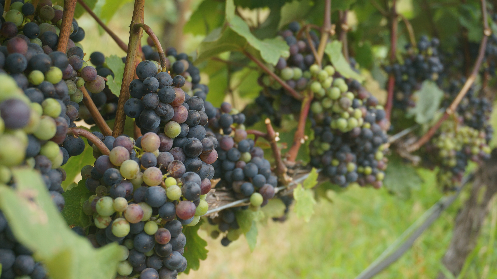

About Grapes
Grapes are small, sweet, and juicy fruits that grow on vines. They are used to make various products such as wine, raisins, and grape juice. Grapes come in different colors, including red, green, and purple.
Steps to Grow Mangoes
- Choose a sunny location with well-draining soil.
- Plant a mango tree sapling or grow from a mango seed.
- Water the mango tree regularly, especially during the dry season.
- Fertilize the tree with a balanced fertilizer that includes micronutrients.
- Prune the tree to encourage a strong structure and remove dead branches.
- Protect the tree from pests and diseases through proper care and organic treatments.
- Harvest ripe mangoes when they have a sweet aroma and yield slightly to gentle pressure.
Extra Information
Grapes are not only delicious but also contain antioxidants and vitamins. They are a popular snack and can be enjoyed fresh or used in various culinary dishes. On the other hand, mangoes are tropical fruits known for their sweet and juicy flesh.